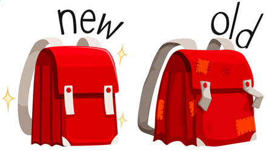

В английском языке существует некий феномен, который очень поможет Вашему быстрому продвижению вперёд. Речь идёт о «НЕизменяемости» английских слов, то есть о том удобнейшем факте, что в огромном количестве случаев английское слово никак изменять не нужно! - Вы будете брать слова прямо из словаря, и, ничего не делая, сразу же строить из них правильные английские фразы и предложения!
«Определение» - это слово, «определяющее», «описывающее» последующее существительное (или: лицо), дающее его признаки.Определение отвечает на вопросы «Какой?», «Который?» (например: «синий», «большой», «пятый», «мой» и пр.). В традиционной грамматике их ещё называют «прилагательными», «притяжательными или указательными местоимениями» и пр., но я против «двойной» терминологии.
Русские определения МОГУТ изменяться и по родáм («красная»), и по числам («красные»), и по падежам («красную»).
Английские же определения НЕ НУЖНО ИЗМЕНЯТЬ ни по родáм, ни по числам, ни по падежам!
То есть, например, в словаре Вы видите слово "RED" («[red]»), которое (согласно словарю) значит «красный»… Hо дело в том, что это английское слово по-русски может значить и «красная», и «красное», и «красному», и «красного», и «красной», и «красную», и «красные» , и «красных», и «красным» - и вообще всё, что Вы с русским словом «красный» можете или хотите сделать!
| my | [my] | мой |
| your | [your] | твой, наш |
| big | [big] | большой |
| clean | [clean] | чистый |
| tender | [tender] | нежный |
| table | [my] | стол |
| hand | [your] | рука |
Скажите по-английски:
Мой большой чистый стол.
Моего большого чистого стола.
Моему большому чистому столу.
Моим большим чистым столом.
Моём большом чистом столе.
Перевод всех этих ↑ «вариантов»:
My big clean table.
Ни одно англослово ↑ не изменено!!!
Теперь поработайте со словом «рука» (hand - [hænd] = рука). В русском оно - женского рода, но у английских слов родóв нет, поэтому в английском предложении при сочетании слов друг с другом род определения никак передавать не нужно!
tender - тэндэ = нежный, clean - клиин = чистый:
Твоя нежная чистая рука.
Твоей нежной чистой руки.
Твою нежную чистую рýку.
Твоей нежной чистой руке.
Твоей нежной чистой рукой.
Перевод:
Your tender clean hand
Учтите, что как бы Вы в таких предложениях русские слова ни изменяли, Английские слова изменяться не будут!
Поэтому, повторяю, ВСЕ варианты данных ← английских фраз будут выглядеть
как:
My big clean table (это - про «стол»)
и как:
Your tender clean hand (это - про «рýку»)
Английские определения изменять НЕ будем!
замечания:
а. Определения могут стандартно изменяться при сравнении («широкий - более широкий / шире - самый широкий» = "wide-wider-(the) widest")
б. Есть и несколько «неправильных» определений. Их формы («степени сравнения») придётся зубрить